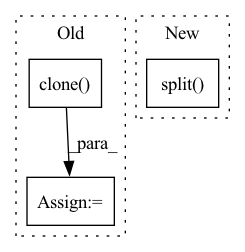

Pattern ID :25532
Before Change
self.node_dropout,
self.norm_adj_matrix._nnz()) if self.node_dropout != 0 else self.norm_adj_matrix
features = self.get_feature_matrix()
finalEmbd = [features.clone() ]
for gnn in self.GNNlayers:
features = gnn(A_hat, self.eye_matrix, features)
features = nn.LeakyReLU(negative_slope=0.2)(features)
features = nn.Dropout(self.message_dropout)(features)
features = F.normalize(features, p=2, dim=1)
finalEmbd += [features.clone()]
finalEmbd = torch.cat(finalEmbd, dim=1)
u_g_embeddings = finalEmbd[:self.n_users, :]
i_g_embeddings = finalEmbd[self.n_users:, :]
return u_g_embeddings, i_g_embeddings
After Change
embeddings_list += [all_embeddings]
ngcf_all_embeddings = torch.cat(embeddings_list, dim=1)
user_all_embeddings, item_all_embeddings = torch.split( ngcf_all_embeddings, [self.n_users, self.n_items])
return user_all_embeddings, item_all_embeddings
def calculate_loss(self, interaction):In pattern: SUPERPATTERN
Frequency: 3
Non-data size: 3
Instances Fragment ID: 77726546
Project Name: rucaibox/recbole
Commit Name: 210deb20fdbedae80baa4e808ed08326a696027f
Time: 2020-09-12
Author: 2015201909@ruc.edu.cn
File Name: recbox/model/general_recommender/ngcf.py
M Class Name: NGCF
N Class Name: NGCF
M Method Name: forward(1)
N Method Name: forward(1)
M Parent Class: GeneralRecommender
N Parent Class: GeneralRecommender
M File Name: recbox/model/general_recommender/ngcf.py
N File Name: recbox/model/general_recommender/ngcf.py
M Start Line: 115
M End Line: 131
N Start Line: 111
N End Line: 123
Before Change
if p.size(1) > 1:
raise ValueError("Not Supported shape for propbabilty.")
p = p.cpu().clone()
features = features.cpu().clone()
with mp.Pool(processes=self.num_workers) as pool:
// p to list
p_list = torch.unbind(p.cpu(), 0)
// f to list
feat_list = torch.unbind(features.cpu(), 0)
After Change
// split the tensors into smaller batches and multi-process them
p_split = torch.split(p, math.ceil(batch_size / self.num_workers))
feat_split = torch.split( features, math.ceil(batch_size / self.num_workers))
with mp.Pool(processes=self.num_workers) as pool:
// itertools map p and f Fragment ID: 77726560
Project Name: turagalab/decode
Commit Name: 6dc5f8a1489142594a36e7e4f6865ea8f0e309d4
Time: 2019-09-11
Author: gitdev@LRM.photo
File Name: deepsmlm/neuralfitter/post_processing.py
M Class Name: ConsistencyPostprocessing
N Class Name: ConsistencyPostprocessing
M Method Name: _cluster_mp(3)
N Method Name: _cluster_mp(3)
M Parent Class: PostProcessing
N Parent Class: PostProcessing
M File Name: deepsmlm/neuralfitter/post_processing.py
N File Name: deepsmlm/neuralfitter/post_processing.py
M Start Line: 481
M End Line: 506
N Start Line: 468
N End Line: 492
Before Change
if self.dynamic or self.grid[i].shape[2:4] != x[i].shape[2:4]:
self.grid[i], self.anchor_grid[i] = self._make_grid(nx, ny, i)
y = x[i].clone()
y[..., :5 + self.nc].sigmoid_()
if self.inplace:
y[..., 0:2] = (y[..., 0:2] * 2 + self.grid[i]) * self.stride[i] // xy
y[..., 2:4] = (y[..., 2:4] * 2) ** 2 * self.anchor_grid[i] // whAfter Change
wh = (wh.sigmoid() * 2) ** 2 * self.anchor_grid[i] // wh
y = torch.cat((xy, wh, conf.sigmoid(), mask), 4)
else: // Detect (boxes only)
xy, wh, conf = x[i].sigmoid().split( (2, 2, self.nc + 1), 4)
xy = (xy * 2 + self.grid[i]) * self.stride[i] // xy
wh = (wh * 2) ** 2 * self.anchor_grid[i] // wh
y = torch.cat((xy, wh, conf), 4)
z.append(y.view(bs, self.na * nx * ny, self.no)) Fragment ID: 77726552
Project Name: ultralytics/yolov5
Commit Name: 060837406542c5c65301b8fde641f4d92a1f395e
Time: 2022-09-17
Author: glenn.jocher@ultralytics.com
File Name: models/yolo.py
M Class Name: Detect
N Class Name: Detect
M Method Name: forward(2)
N Method Name: forward(2)
M Parent Class: nn.Module
N Parent Class: nn.Module
M File Name: models/yolo.py
N File Name: models/yolo.py
M Start Line: 61
M End Line: 77
N Start Line: 58
N End Line: 77